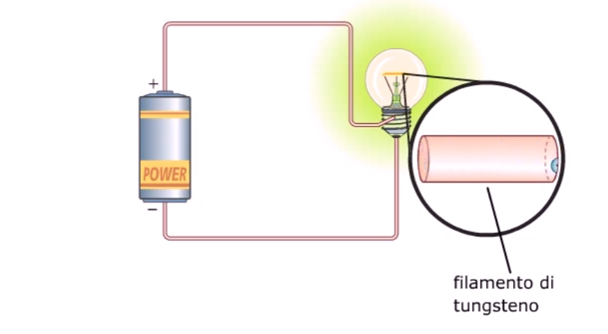
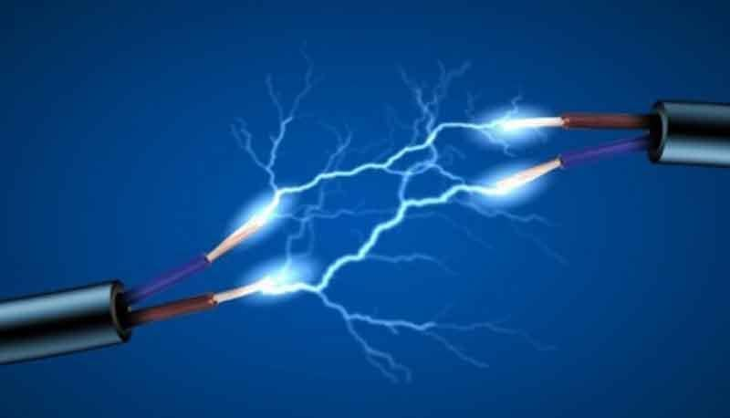

Formula di intensità di corrente elettrica
Si chiama intensità di corrente elettrica il rapporto tra la quantità di carica che attraversa una sezione del conduttore in un dato intervallo di tempo e l'intervallo di tempo stesso.

La corrente elettrica è un moto ordinato di cariche elettriche che si muovono all’interno di un conduttore. È una delle grandezze fondamentali dell’elettrotecnica e viene indicata con la lettera I.La sua unità di misura nel Sistema internazionale è l'Ampere
 Si chiama intensità di corrente elettrica il rapporto tra la quantità di carica che attraversa una sezione del conduttore in un dato intervallo di tempo e l'intervallo di tempo stesso.